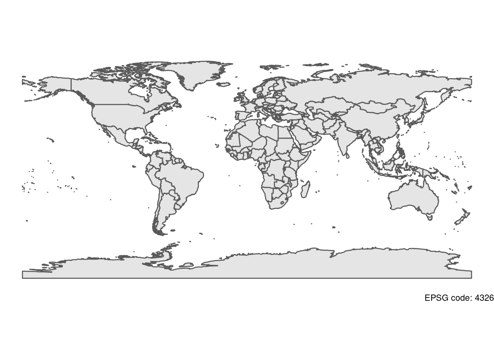

8 Map Projections
articulate your mapping goals using formal terminology.
explain the benefits of creating maps using a programming language.

Any time you look at a 2D map you are looking at a map projection which contorts a 3D surface to fit on a page (sorry flat earthers). The Hereford Mappa Mundi (above) looks nonsensical at first, but that’s only because you don’t immediately understand the rules defining the map projection. There are many different ways to project the globe, all with pros and cons.
8.1 Why do map projections matter?
The units of a map projection are not constant in terms or real world distance (see above). This can affect any geocomputation you do, such as looking for nearest neighbours.
Map projections can also seriously affect how you view spatial relationships, and can have a significant impact on your story telling. The Spilhaus map projection (below) is an extreme case which reimagines the world as a single ocean.

I’ve included code below to reproject a world map to a few example map projections. These projections are defined as coordinate reference systems (crs) with common ones accessible as epsg codes. I’ve focussed on varying latitude in the examples, but you might want to think about other factors for your studies, such as whether to centre on the Pacfic, or other longitudes. You can play around with other map projections by searching on google for epsg codes supported by R.
8.2 Mercator
land <- rnaturalearth::ne_countries(scale = "medium", returnclass = "sf") # Import a world map
ggplot(land) + # Start a plot
geom_sf() + # Add the polygons
theme_void() + # use an aesthetic template
labs(caption = str_glue("EPSG code: {sf::st_crs(land)$epsg}")) # Add a label for the projection